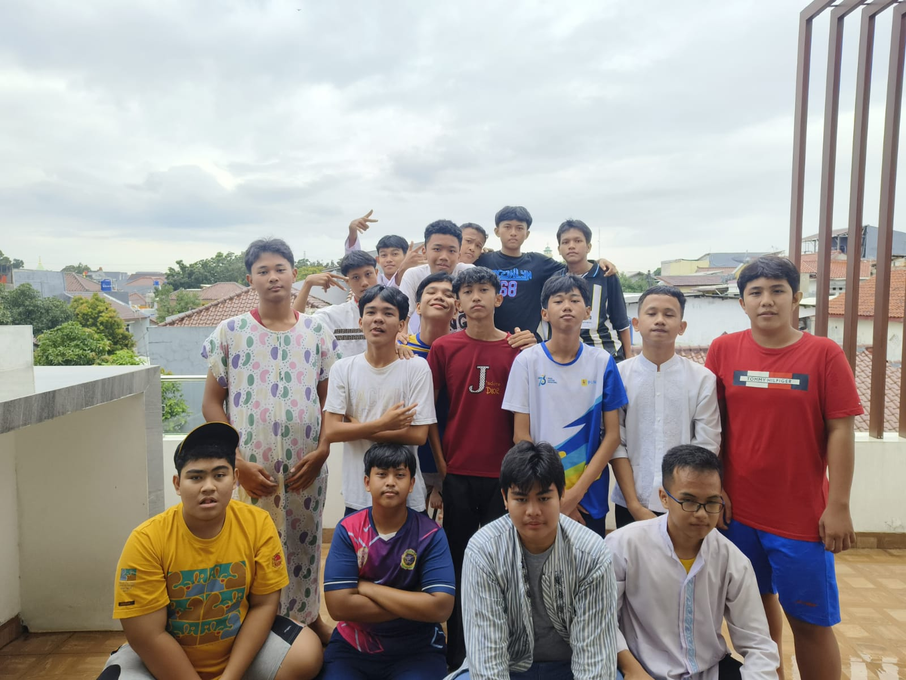
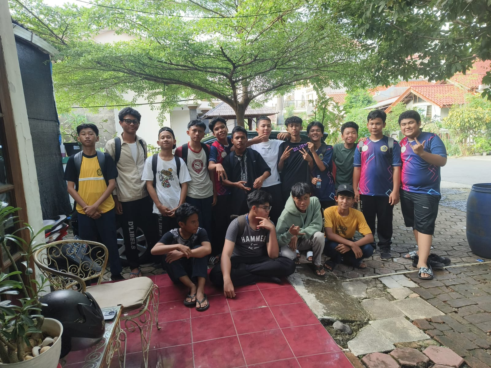

Awal Terbentuk

Remaja RT 3 berdiri pada 27 September 2023 dan tahun ini Remaja RT 3 sudah berumur 2 tahun. Remaja
RT 3 terbentuk saat 10 orang diantaranya Arga, Denis, Dipio, Bayu, dan lainnya menginjak kelas 2
SMP. Remaja RT 3 terbentuk karena tidak sengaja. Kenapa bisa begitu? Karena awalnya Remaja RT 3
hanya sebuah grup kelompok p5 dan tidak ada tujuan untuk memperluas jangkauan. Tetapi pada 4
Desember 2023, salah satu anggota membuat 1 grup baru yang pada akhirnya memperluas jangkauan, nama
grup tersebut yaitu "Dongeng Sebelum Tidur". Awalnya grup tersebut hanya grup main-main dan seiring
berjalannya waktu 14 anggota grup tersebut resmi masuk ke Remaja RT 3. Anggota grup Dongeng Sebelum
Tidur diantaranya Haikal, Adan, Yusuf, Wildan, Adif, Fatih, Haidar dan lainnya. Oh iya, nama Remaja
RT 3 awalnya bukan Remaja RT 3. Ada beberapa nama yang dipakai sebelum Remaja RT 3
Asal Usul Nama

Mari kita bahas beberapa nama yang dipakai sebelum Remaja RT 3. Yang pertama ada Team Booyah, tidak
ada arti tertentu untuk nama ini, tapi grup ini bubar. Yang kedua ada Kelompok 3, kenapa Kelompok 3? Karena
pada saat itu 10 Anggota yang berasal dari kelas yang sama mendapatkan urutan kelompok ke 3 saat p5.
Namun pada akhirnya grup ini bubar juga karena perselisihan antar anggota. Dan yang terakhir ialah
Remaja RT 3. Kata Remaja diambil karena anggotanya masih remaja semua, mungkin kalu sudah dewasa jadi bapak-bapak rt 3. Kata RT memiliki
makna "Raih Tujuan" yang bermaksud kalau setiap anggota Remaja RT 3 memiliki tujuan yang harus
diraih. Dan yang terakhir ada huruf 3 dari kelompok 3. Pelu diingat bahwa Remaja RT 3 itu bukan grup
pertama melainkan grup ketiga dari 2 grup yang telah bubar
Anggota

Remaja RT 3 terdiri dari 24 anggota dan TIDAK AKAN PERNAH BERTAMBAH. Mari kita berkenalan satu persatu dengan anggota Remaja RT 3
Lanjut